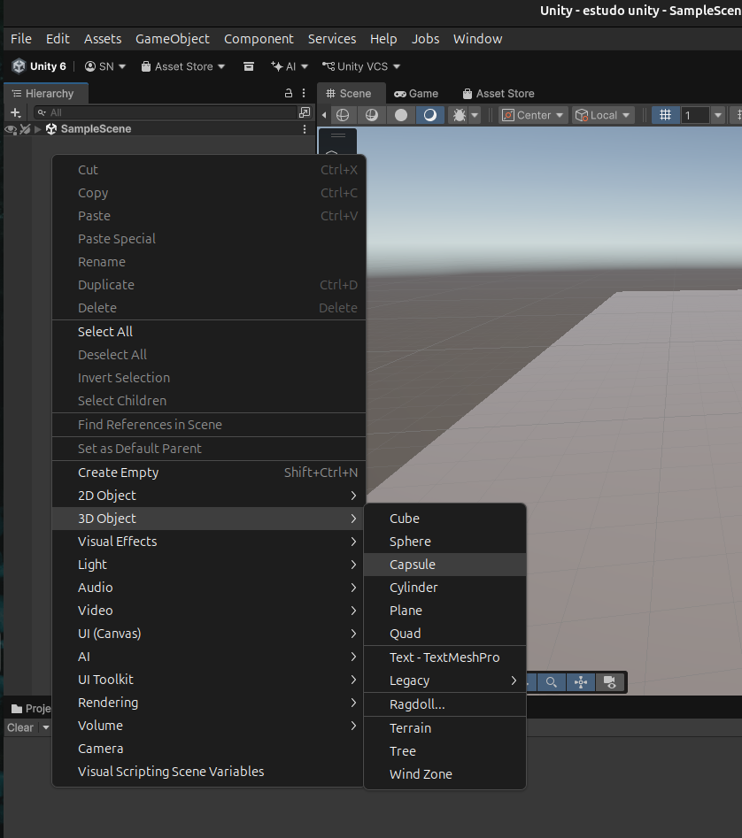
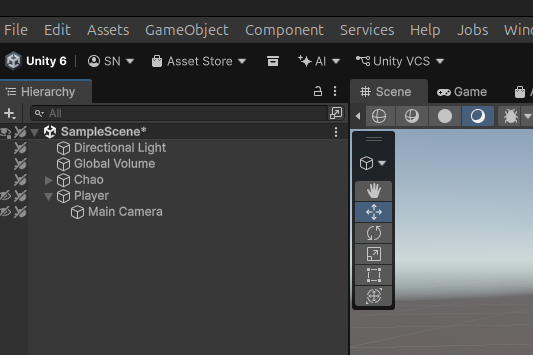
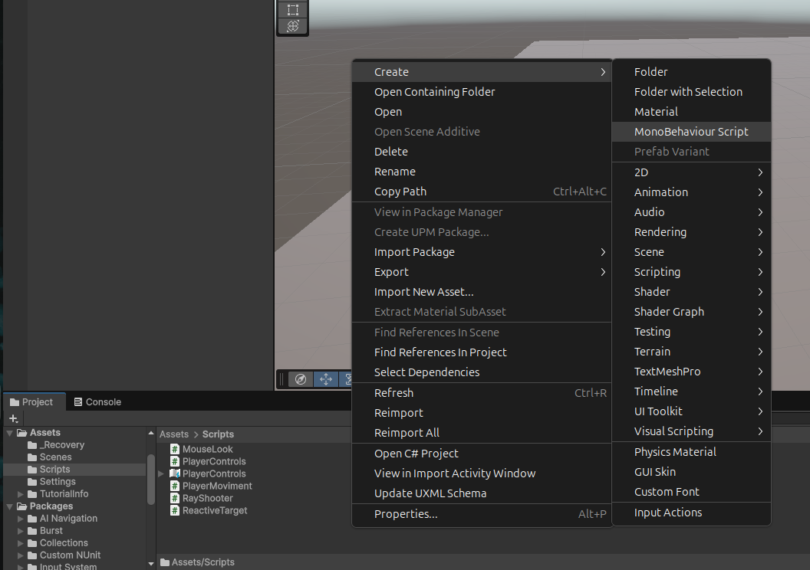

Tutoriais de Unity
Introdução
Neste tutorial vamos aprender como criar um movimento básico de personagem em primeira pessoa na Unity.
Utilizaremos formas basicas para criar um personagem simples e aprender a movimentá-lo utilizando o novo Input System da Unity. Durante este tutorial vamos entender como separar o movimento do personagem da rotação da câmera.
Uma observação importante essa serie de tutoriais que pretendo fazer vai avançar gradualmente conforme vou adquirindo mais conhecimento sobre a Unity.
Preparando o personagem
Neste tutorial, vamos criar a base de um pequeno jogo em primeira pessoa, também conhecido como FPS (First-Person Shooter). Nesse tipo de jogo, a câmera representa a visão do jogador, permitindo que ele observe o cenário como se estivesse dentro do próprio personagem.
Para começar, vamos criar um chão, uma cápsula para representar nosso personagem e uma câmera que ficará vinculada a ele. Por enquanto, utilizaremos formas básicas da Unity, sem nos preocupar com modelos ou animações.
1. Criando o chão
Na aba Hierarchy, localizada à esquerda da tela, como mostra a Figura 001, clique com o botão direito em uma área vazia. No menu que aparecer, acesse 3D Object e selecione Plane.
Depois de criar o plano, renomeie-o para Chão. Ele será a superfície onde nosso personagem poderá caminhar futuramente.

2. Criando o personagem
Agora, clique com o botão direito em uma área vazia da aba Hierarchy, acesse 3D Object e selecione Capsule.
Renomeie o objeto criado para Personagem. Essa cápsula será uma representação provisória do jogador durante o desenvolvimento do tutorial.
3. Adicionando a câmera
Ao criar uma cena nova, a Unity normalmente já inclui uma câmera chamada Main Camera. Verifique se ela aparece na aba Hierarchy. Caso não exista, clique com o botão direito em uma área vazia, acesse a opção Camera e crie uma.
Agora precisamos fazer com que a câmera acompanhe o personagem. Para isso, arraste o objeto Main Camera sobre o objeto Personagem na aba Hierarchy.
Quando a câmera aparecer recuada abaixo do personagem, significa que ela se tornou sua filha na hierarquia, conforme a figura 002 abaixo.

Essa relação é importante porque a câmera passará a acompanhar a posição e a rotação do personagem. Mais adiante, ajustaremos sua posição para ficar na altura dos olhos e implementaremos os controles para olhar ao redor.
Controle da câmera
Para começarmos a programar o comportamento do personagem, precisamos criar um script em C#. Esse script será responsável por receber os comandos que posteriormente controlarão o personagem e a câmera.
Na janela Project, dentro da pasta onde você está organizando seus scripts, clique com o botão direito em uma área vazia e selecione Create. Depois, vá até Scripting e selecione a opção MonoBehaviour Script, conforme podemos ver na Figura 003 logo abaixo.

Depois de criar o script, renomeie o arquivo. Neste exemplo, vamos utilizar o nome MouseLook. Esse script será usado para criar os controles da câmera através do mouse.
Esse script já vem com um código-base sobre o qual iremos trabalhar. Antes de começarmos a adicionar novos comandos, vamos entender primeiro a sua estrutura.
using UnityEngine;
public class MouseLook : MonoBehaviour
{
}
Using UnityEngine:
Essa linha permite que nosso script utilize as classes e os recursos disponibilizados pela Unity.
Por exemplo, MonoBehaviour, que aparece na declaração da classe logo abaixo, faz parte da API da Unity.
public class MouseLook : MonoBehaviour
Aqui estamos criando uma classe chamada MouseLook. O nome da classe deve ser o mesmo nome do arquivo: MouseLook.cs
O : MonoBehaviour indica que nossa classe herda de MonoBehaviour. Isso permite que o script seja utilizado como um componente dentro de um GameObject da Unity.
O que é um GameObject?
Antes de continuarmos, precisamos entender um conceito importante da Unity: o GameObject.
Na Unity, praticamente tudo que colocamos dentro da cena é representado por um GameObject. Nosso chão, nosso personagem e nossa câmera são exemplos de GameObjects.
Um GameObject pode receber diferentes componentes, que adicionam características e comportamentos a ele. Por exemplo, uma câmera possui um componente chamado Camera, que define seu comportamento como câmera dentro do jogo.
Os scripts que criamos também podem ser adicionados como componentes aos GameObjects. Dessa forma, podemos programar comportamentos específicos para cada objeto.
As chaves { }
As chaves delimitam o conteúdo da classe. Tudo que colocarmos entre essas chaves fará parte da classe MouseLook.
Input System
Conteúdo sobre Input System...
Raycast
Conteúdo sobre Raycast...
Câmera
Conteúdo sobre câmera...